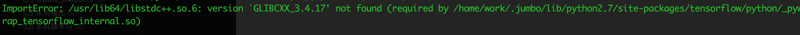

入门教程
https://github.com/machinelearningmindset/TensorFlow-Course
1.week1
传统编程与深度学习编程的区别

安装tensorflow
https://morvanzhou.github.io/tutorials/machine-learning/tensorflow/1-2-install/
# 安装CPU/GPU版本。需pip至少8.1版本
pip install tensorflow
pip install tensorflow-gpu
中间有报警

最后, 如果你需要升级 Tensorflow 的版本, 推荐的方式是：根据你的 python 版本, 在 terminal 中删除原有的版本,然后再装一遍
# 如果你是 Python 2, 请复制下面
pip uninstall tensorflow
# 如果你是 Python 3, 请复制下面
pip3 uninstall tensorflow
安装成功后
> import tensorflow as tf
报错：
解决；http://www.laomn.com/article/item/60445
https://www.cnblogs.com/atomicbomb/p/7028917.html
https://blog.csdn.net/ChenVast/article/details/79103288
mac上安装正常，没有问题
week1 hello word
Original file is located at
https://colab.research.google.com/github/lmoroney/dlaicourse/blob/master/Exercises/Exercise%201%20-%20House%20Prices/Exercise_1_House_Prices_Question.ipynb
In this exercise you'll try to build a neural network that predicts the price of a house according to a simple formula.
So, imagine if house pricing was as easy as a house costs 50k + 50k per bedroom, so that a 1 bedroom house costs 100k, a 2 bedroom house costs 150k etc.
How would you create a neural network that learns this relationship so that it would predict a 7 bedroom house as costing close to 400k etc.
Hint: Your network might work better if you scale the house price down. You don't have to give the answer 400...it might be better to create something that predicts the number 4, and then your answer is in the 'hundreds of thousands' etc.
这里先以一个简单的”hello word“例子来介绍，假设我们想学习一个简单的线性关系
\[y=50x+50 \]
我们已知是输入数据x，以及答案Y，想知道的其实是背后x和y之间的关系(rule)。那么机器要怎么学习这种关系呢？
# 线性回归例子
import tensorflow as tf
import numpy as np
from tensorflow import keras
model = tf.keras.Sequential([keras.layers.Dense(units=1, input_shape=[1])])
model.compile(optimizer='sgd', loss='mean_squared_error')
xs = np.array([1,2,3,4,5,6,7], dtype=float)
ys = np.array([100, 150, 200,250, 300,350, 400], dtype=float)
model.fit(xs, ys, epochs=500)
print(model.predict([7.0]))